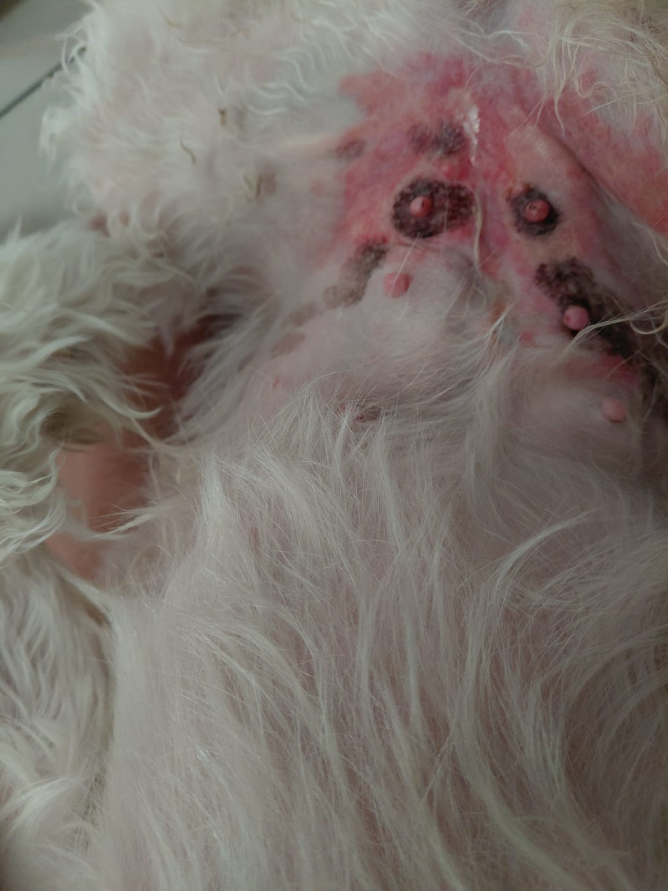
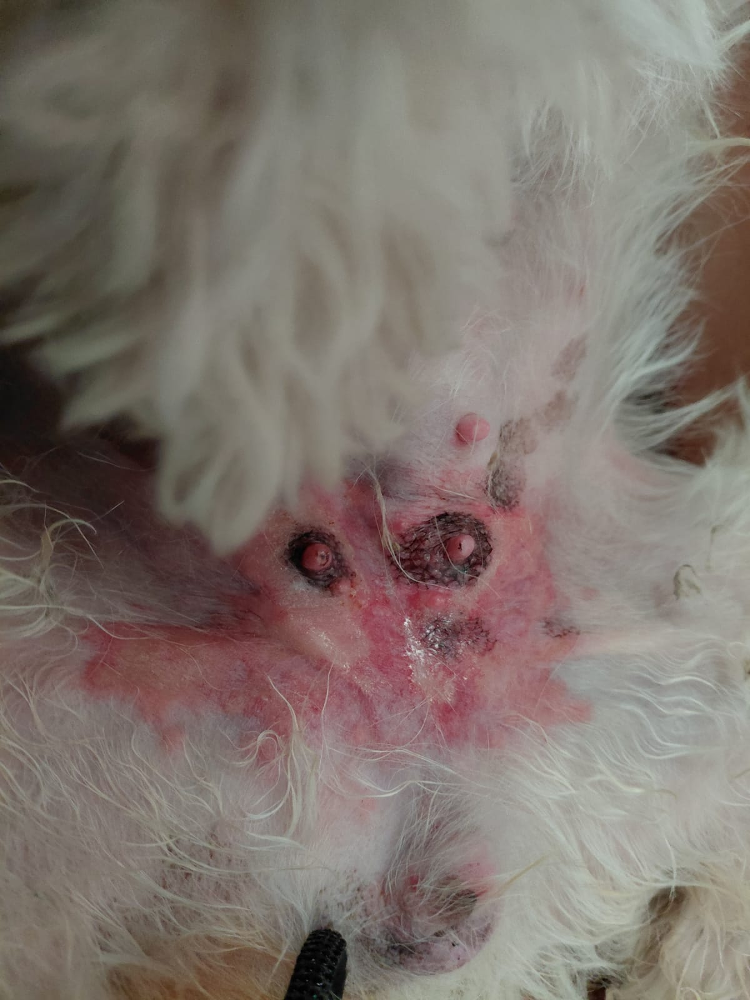
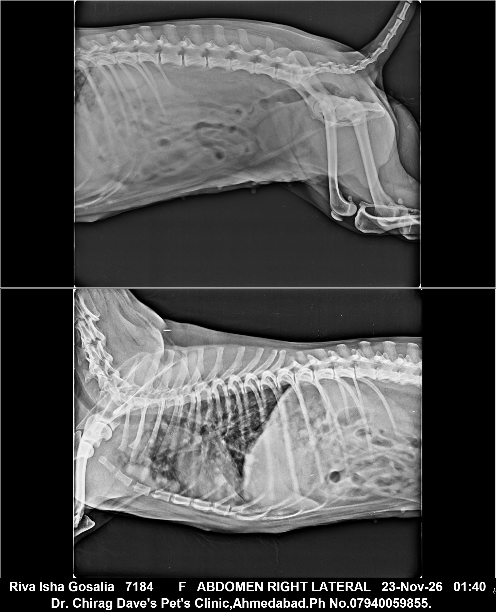

1. Summary of findings (23 Nov 2026)
2. Clinical history and timeline
From the treating clinic's medical record (Dr. Chirag Dave's Pets' Clinic) and the history the family gave.
Photos of the affected skin (25 Nov 2026, day 3 of treatment)


Taken by the family on a phone, with Riva lying on her back. They show the reddened skin and darker patches around the nipples of the caudal mammary glands. Shiny areas may be from the topical sprays. Tap a photo to enlarge it.
3. Current treatment (prescribed 23 Nov 2026)
| Product | Active ingredient | Dose and frequency (vet's written instruction) |
|---|---|---|
| Tocerapet-15 | Toceranib phosphate 15 mg | 1.5 tablets (22.5 mg) after food, Mon / Wed / Fri. At 7.4 kg this is about 3.0 mg/kg; the record states a target of 2.75 mg/kg. |
| Toxo-Mox 250 | Amoxicillin + clavulanate | ½ tablet (125 mg, about 17 mg/kg) every 12 h, after food |
| MPS Liposomal Apigenin 500 | Apigenin with fisetin, quercetin, theaflavins, resveratrol | 1 tablet every 24 h |
| CystoPro (Protexin) | Urinary tract support supplement | 1 capsule every 24 h, sprinkled on food |
| SynFOSium (Vivaldis) | Prebiotic + probiotic | 1 capsule every 24 h, sprinkled on food |
| PinPoint lotion | Silver nanoparticles (topical, wound) | Spray on and around the wound every 4 hours (4 times a day while awake). Prevent licking. |
| Cortavance | Hydrocortisone aceponate 0.584 mg/mL (topical) | Spray every 12 hours (also prescribed on 22 Oct) |
Doses in mg/kg use the 23 Nov weight of 7.4 kg. The topical sprays are for the inflamed skin of the lower belly over the mammary area. The clinic record's Toxo-Mox entry has a template dose line that mentions an injection; the vet's written instruction (½ tablet every 12 h after food) is the one followed. Previous medicines (22 Oct): Allergia Pro ½ tab daily and K9PEA ½ tab daily.
Photos of the medicine packs with the vet's handwritten instructions
4. Radiograph: lateral abdomen and thorax

Tap the image to enlarge it. The film label reads "Abdomen right lateral"; the lower view shows the thorax. The clinic record lists 2 radiographs ("thorax and abdomen in 2 views at 90 degrees"), but only these lateral views were shared with the family. Orthogonal (VD/DV) views may be available from the clinic.
Report (verbatim)
5. Abdominal ultrasound
Report (verbatim)
Still images (24, in acquisition order)
The machine date reads 01-01-2009 because its clock was wrong; the scan is from 23 Nov 2026. Only frames 1, 13, 15, 16, 19 and 22 have an organ label on screen. The other organ labels below are inferred from the order the images were taken.
Cine loop (video, 6 seconds)
Clip 22 in the original sequence (machine time 12:17:55, recorded between still images 21 and 22). It has no organ label on screen. The fluid-filled structure near the probe looks like the urinary bladder, but the treating vet should confirm. Converted from the original AVI to MP4 for web playback; the image itself is unchanged.
6. Urinalysis (23 Nov 2026)
| Parameter | Outside lab (microscopy) | IDEXX in-clinic | Reference | IDEXX 22 Oct |
|---|---|---|---|---|
| Collection | Free catch | |||
| Colour / clarity | Colourless / clear | Straw / clear | Yellow / clear | Dark yellow |
| Specific gravity | 1.007 | 1.008 | 1.015–1.045 | 1.065 |
| pH | 7.5 | 5.0 | 5.5–7.5 | |
| Blood | Positive ++ | 10 (trace) | Negative | |
| Protein | Positive + | Negative | Negative to + | |
| Glucose / ketones / bilirubin | Negative | Negative | Negative | |
| Nitrite / leukocytes | Negative / negative | Leukocyte esterase negative | Negative | |
| RBC /HPF | 20–100 | <5 | ||
| WBC /HPF | <5 | <5 | ||
| Epithelial cells | Squamous and transitional | Few | ||
| Crystals | Struvite (magnesium ammonium phosphate) | Few phosphate | ||
| Casts | None | None |
The outside lab report was signed by Dr Vaishnavi A Patel, M.V.Sc. Veterinary Pathology. IDEXX comment: "Potentially inappropriate concentration: consider hydration status and, if persistent and inappropriate, renal disease, endocrinopathies, and medications." The pH and blood readings differ between the two analyses (7.5 vs 5.0, ++ vs trace). This may reflect different samples or methods; check with the treating vet.
7. Haematology and chemistry (IDEXX ProCyte One / Catalyst One)
Haematology
| Test | 23 Nov 2026 | Reference | 22 Oct 2026 |
|---|---|---|---|
| RBC | 7.81 M/µL | 5.60–9.21 | 6.33 |
| Haematocrit | 47.6 % | 36.6–61.1 | 38.2 |
| Haemoglobin | 18.6 g/dL | 12.4–22.0 | 18.5 |
| MCV | 61.0 fL | 57.6–75.2 | 60.3 |
| MCH | 23.8 pg | 20.1–27.6 | 29.3 |
| MCHC | 39.1 g/dL | 31.9–39.3 | >48.5 |
| RDW | 20.8 % | 13.7–22.1 | 18.9 |
| Reticulocytes | 23.4 K/µL (0.3 %) | 10.0–110.0 | 19.9 |
| WBC | 20.27 K/µL ↑ | 5.05–18.60 | 11.23 |
| Neutrophils | 15.96 K/µL ↑ (78.7 %) | 2.92–13.80 | 8.53 |
| Lymphocytes | 1.18 K/µL (5.8 %) | 0.76–4.40 | 1.35 |
| Monocytes | 2.35 K/µL ↑ (11.6 %) | 0.31–1.95 | 0.71 |
| Eosinophils | 0.78 K/µL (3.8 %) | 0.06–1.23 | 0.63 |
| Basophils | 0.00 K/µL | 0.00–0.10 | 0.00 |
| Platelets | 205 K/µL | 148–674 | 366 |
| MPV | 16.0 fL ↑ | 8.1–14.7 | 14.0 |
| PDW / plateletcrit | 15.6 fL / 0.33 % | 6.4–21.2 / 0.16–0.75 | 10.8 / 0.51 |
Analyser comment: "Monocytosis: consider inflammation (if lymphopenia, consider glucocorticoid response)."
Chemistry
| Test | 23 Nov 2026 | Reference | 22 Oct 2026 |
|---|---|---|---|
| Glucose | 113 mg/dL | 70–143 | |
| SDMA | 16 µg/dL ↑ | 0–14 | 10 |
| Creatinine | 1.1 mg/dL | 0.5–1.8 | 0.8 |
| Urea | 18 mg/dL | 7–27 | 12 |
| BUN:creatinine | 17 | 16 | |
| Phosphorus | 3.7 mg/dL | 2.5–6.8 | 2.9 |
| Calcium | 9.7 mg/dL | 7.9–12.0 | |
| Sodium | 157 mmol/L | 144–160 | 153 |
| Potassium | 3.8 mmol/L | 3.5–5.8 | 4.6 |
| Na:K | 41 | 34 | |
| Chloride | 110 mmol/L | 109–122 | 111 |
| Total protein | 6.4 g/dL | 5.2–8.2 | |
| Albumin | 3.0 g/dL | 2.2–3.9 | |
| Globulin | 3.4 g/dL | 2.5–4.5 | |
| A:G ratio | 0.9 | ||
| ALT | 23 U/L | 10–125 | |
| ALP | 40 U/L | 23–212 | |
| GGT | 4 U/L | 0–11 | |
| Total bilirubin | <0.1 mg/dL | 0.0–0.9 | |
| Cholesterol | 243 mg/dL | 110–320 | |
| Amylase | 404 U/L ↓ | 500–1,500 | |
| Lipase | 268 U/L | 200–1,800 | |
| Osmolality (calc.) | 312 mmol/kg |
IDEXX SDMA comment: "SDMA is increased, CREA within reference interval: likely impaired GFR and kidney function. Recommended next step: evaluate complete urinalysis."
8. Original reports (PDF)
9. Questions for the reviewing vet
- Mammary masses: with no FNAC or biopsy on record, is cytology or histopathology still worthwhile to confirm the tumour type and guide treatment?
- Do the thoracic opacities fit pulmonary metastasis? Are further views (VD/DV, left lateral) or CT advisable?
- Bladder lesion: mural neoplasm vs organised clot. What is the best next step (repeat US, Doppler, cystoscopy, traumatic catheter sample, cytology)?
- Rising SDMA (10 to 16), dilute urine and proteinuria while on toceranib: should UPC and blood pressure be monitored, and how often?
- Do the leukocytosis and monocytosis need further work-up beyond the current antibiotic course?
- Is the current toceranib dose and schedule (22.5 mg Mon/Wed/Fri, about 3.0 mg/kg at 7.4 kg) appropriate for her weight and kidney values?
- Crystalluria changed from uric acid (Oct) to struvite (Nov): is any dietary change or further work-up advised?
- Difficulty walking and getting up: is pain management or assessment for orthopaedic or neurological causes needed?